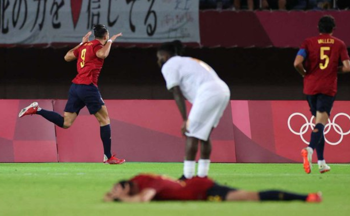

Foodball olimpiadasi.Ispaniya 5, Meksika 6 gol urdi,
yarimfinal juftliklari ma'lum
Olimpiadaning foodball bo'yicha bahslarida 1/4 final uchrashuvlari bo'lib o'tdi. O'yinlarning birida 7,
boshqasiga 9 gol urdi.

58 soniyada xaloskor gol
Ispaniya - Kot-d'Ivuar 5:2
Gollar: 0:1 - 10 Bayi, 1:1 - 30 Olmo, 1:2 - 90 Gradel, 2:2 - 90 Rafa Mir, 3:2 - 98, penalti Oyarsabal,
4:2 - 117 Rfa Mir, 5:2 - 120 Rafa Mir
1 Uy ishi
2 Uy ishi
3 Uy ishi